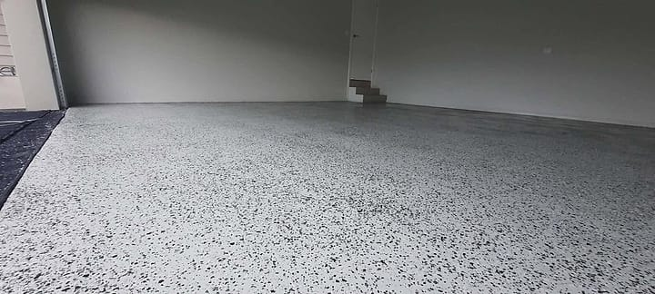
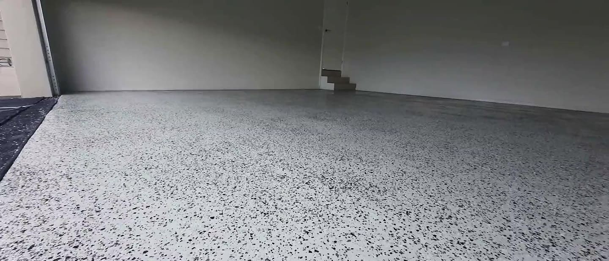
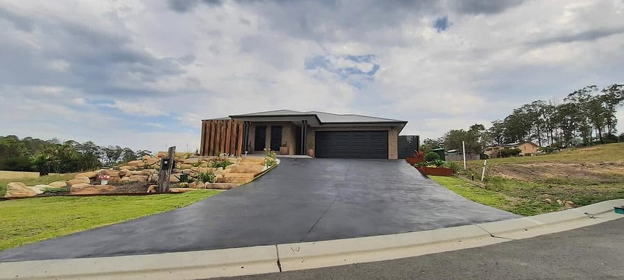
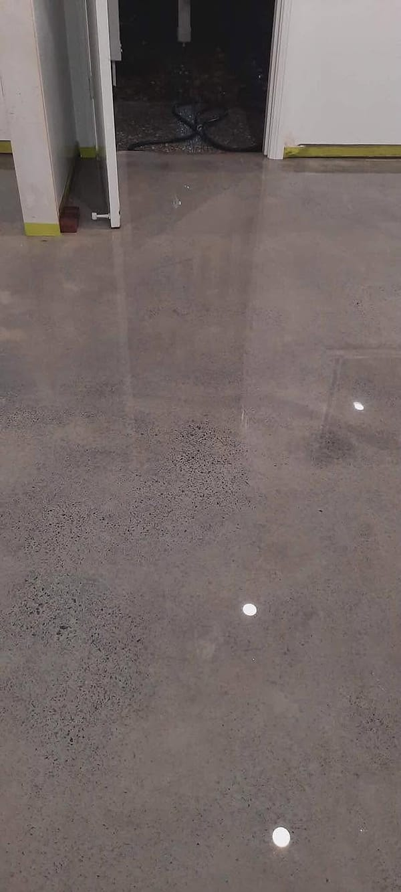

Most requested
Garage floor coatings
Full flake broadcast or solid colour, ground back and sealed. The finish most people picture when they picture a finished garage.
Garage floors
Servicing Newcastle & the Hunter Region
Garage floors, driveways and interior concrete across Newcastle, Lake Macquarie and Maitland. Every slab is assessed and diamond-ground before a drop of coating goes down — because that is what decides whether a floor lasts.
The part you never see
Coatings fail at the bond, not the surface. These are two of our own floors — one mid-preparation, one finished. The grinding stage is the one that decides which of those you end up with.

Mechanical grinding with dust extraction

Finished polished concrete
These are two separate Floor Candy photographs, not a before-and-after of the same frame. We would rather show you what the work actually looks like than stage a comparison.
What we coat

Most requested
Full flake broadcast or solid colour, ground back and sealed. The finish most people picture when they picture a finished garage.
Garage floors
Exterior
Resurfacing, sealing and decorative finishes for driveways, paths and alfresco areas — the first thing anyone sees.
Ask about a driveway
Interior
Interior slabs, sheds and converted spaces — ground back, sealed and finished so they clean up with a mop.
Ask about interiorsWe also take on natural stone polishing, and selected commercial work where the scope suits a small owner-led operation. Tell us about the space
Why floors fail
Nearly every failure people describe traces back to the same thing: the slab was never properly prepared. Coating over a sealed, contaminated or unground surface is why floors lift in sheets, peel at the tyre tracks, or chip off in coin-sized pieces a season later.
The honest version is that preparation is most of the labour and almost none of what you can see afterwards. It is also the first thing cut when a quote is sharpened.
Lifting & peeling
The coating never keyed into the concrete. Usually acid etching instead of mechanical grinding, or a slab that was still contaminated.
Hot-tyre pickup
Warm tyres soften a weakly bonded coating and lift it off in patches where you park.
Yellowing
Direct sun on a topcoat that was never intended for UV exposure. Common on driveways and roller-door thresholds.
Bubbling & patchiness
Moisture moving up through the slab, or product applied outside its conditions. Both are assessment problems, not luck.
Dusting
A weak surface layer left in place. It keeps shedding fine grit no matter how often the floor is swept.
Our method
Ten steps, in order, on every floor. What changes between jobs is the system specified at the end of step 2 — because that depends on your concrete, not on a package.
We look at the slab and at how the space is actually used — parked on, walked on, washed down, or all three.
Cracks, damage, contamination and potential moisture concerns. This is where the system gets specified.
Weak surface material comes off and the slab is profiled so the coating has something to key into.
Industrial dust extraction through the grind, then a thorough clean of the prepared surface.
Cracks, chips and damaged areas made good. Existing or moving cracks can be repaired — they cannot be permanently eliminated, and we will say so on site.
The primer or base system specified for your concrete and its intended use.
Your selected finish, including a full flake broadcast where that is the system chosen.
Excess flake removed and the surface refined, then the protective topcoat goes on.
We walk the finished floor with you before the balance is paid.
System-specific advice on curing, when vehicles can go back on, cleaning and maintenance.
Recent work

Flake epoxy garage floor

Sealed concrete driveway
What customers say
We are a small operation and these are all of them, in full, exactly as they were written. Every one is answered personally.
“Jarrod and his team did a fantastic job at my house very satisfied with the results and how professional he is , would highly recommend this company”
“We had an epoxy floor installed in our shed conversion and it’s completely transformed the space. It looks great and is super easy to maintain. Jarrod was super helpful and efficient, the finish is high quality. Really happy with the result and would definitely recommend.”
“I recently had the pleasure of working with Jarred from Floor Candy and I couldn’t be happier with the results. His expertise in natural stone polishing is outstanding—he restored our stone surfaces to a beautiful, high-quality finish that…”
Shown as Google truncates it.
Rating and review count verified on the Floor Candy Google Business Profile, 10 August 2026.
No cost, no obligation
Jarrod comes to you, looks at the actual concrete, and leaves you with something in writing — whether or not you go ahead.
Straight answers
You can, and plenty of people do. The difference is almost entirely in the preparation. A kit is applied to the slab as it is; we mechanically grind the surface back first, extract the dust, and repair what needs repairing before anything goes down.
That is why kit floors are the ones you see lifting at the tyre tracks after a season. If a DIY floor has already failed, that is a job we take on — the old coating comes off as part of the preparation.
Lifting is a bond problem, and bond is decided during preparation. Mechanical grinding, proper extraction, and specifying the system after we have seen the slab are how that risk is managed.
What we will not do is promise an outcome for concrete we have not inspected. If the slab has a moisture issue, we would rather tell you at the assessment than after the coating is down.
Cracks, chips and damaged areas are repaired where appropriate as part of the preparation. Existing or moving cracks cannot be permanently eliminated — concrete keeps moving, and anyone who tells you otherwise is overselling. We will show you which cracks are which on site.
It depends on the system specified for your slab, so we give you the actual figures for your floor at handover rather than a blanket promise here. Curing, when vehicles can go back on, and how to clean it are all covered in the handover guidance.
Texture varies by finish. A full flake broadcast has noticeably more grip underfoot than a smooth gloss, which matters most in wet areas and on exterior work. Tell us how the space is used and we will talk through the trade-off honestly at the assessment.
We do not publish prices, because the honest answer depends on the slab. Size, the condition of the concrete, whether there is an existing coating to remove, access, and the finish you choose all move it.
What you get instead is a fixed, itemised price in writing after we have seen the floor — not a range that changes on the day.
You receive a written scope and quote before committing to anything. A booking deposit may be required to secure your date and order materials. Every project finishes with a final walkthrough, so you can inspect the completed surface before paying the remaining balance.
We service Newcastle, Lake Macquarie, Maitland and surrounding parts of the Hunter Region. Port Stephens, Cessnock and work outside that core area are considered depending on the size and requirements of the job — worth asking.
Newcastle & the Hunter Region
Book a free on-site assessment and find out what your concrete actually needs — before anyone quotes you a number.